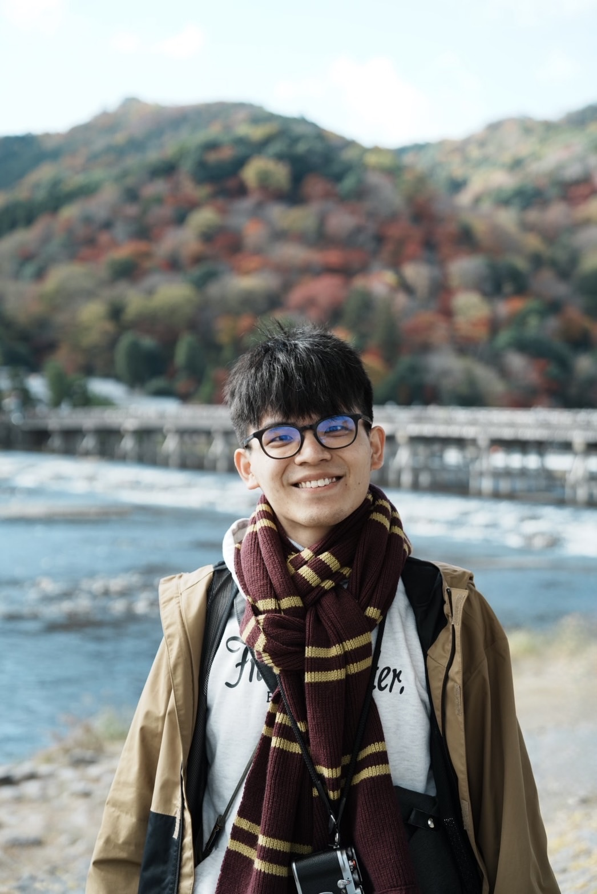

學會接受當下現況，從此開始，遺忘過往的懊悔！
我有想過，我今年不太想寫年度回顧，尤其是在看了之前對每一年的開始有多麼殷殷期盼以及雄心壯志，我對自己今年的年度回顧產生了自卑羞愧的想法，沒有勇氣去把它發出來。但是在不斷和自己的內心對話之後，我學會對自己的現況全然的接受，對事實不做逃避，好好的、慢慢的在這裏細細訴說。
我會在接下來的文章裡，寫下我在每一個季度的重要大事，轉折以及想法，並在最後再度為2025年做一個宣告。
Q1: 關關難過關關過
這一年的開始，我懷抱著與往年相似的期待和焦慮。對於即將到來的資格考，我對待他仍然像對待巨大猛獸般，那種連呼吸都無法順暢地完成一吸一吐的感覺，時常壓得我喘不過氣。我每天告訴自己：「再撐一下，再往前一步。」但有時候，命運會跟你玩耍，他會以出其不意的方式教會我面對一些「驚喜」。
2月底，我的存檔消失了。每一次寫完一個段落總是會按下存檔的按鈕，闔上銀幕前，我總是要看見「save to my mac」這串字元出現在視窗上方，我才肯乖乖入睡，殊不知某天陰錯陽差之下，我的檔案居然離奇的消失不見了，暫存資料夾也都沒有他的蹤跡，最後存檔日就硬生生的回溯到年初剛做完封面頁的版本，我整個人都蒙了。
「完了啊！就都不要畢業啊！」這種自暴自棄之類的想法，我不會說沒有過，但讓我驚訝的是，我在認知到這是不可逆的結果後，我轉換到「problem-solving」模式的速度有體感上的提升，我發現到，我能更好的不太拘泥於這種受害者思維過久，把狀況認清後，我在補救這份研究提案上日以繼夜地趕工著，我現在回想起來，我不曉得我是如何度過那段時期的、也不曉得當初是懷抱著怎樣的心態去完成它，但是我知道我是沈浸在其中的，我似乎忘記時間的流逝，這也許就是所謂的「心流」吧！
在好好趕完提案後，我順利的迎來資格考。透過這份研究提案的撰寫，我對我的論文主題感到興奮，我瞭解到透過解決基本方法上的改進，可以連結到這些工具可以如何改善或是幫助臨床上在執行影像量化，更進階一步的去幫助整個阿茲海默社群。「我踏出非常成功的一步！」我心中如此肯定著，並對即將畢業所剩餘的該辦事項做一系列「完美」的規劃，感覺事情就會如期完成並準時畢業！

Q2: 設定了，然後呢？
四月來到，通過資格考的興奮感逐漸散去，生活好像回到了日常，但內心卻有一種說不上來的空洞感。我試著用各種計劃填滿時間，設定清晰的目標，希望每一天都能有所進展。然而，我很快發現，計劃和現實之間，總是隔著一道難以跨越的鴻溝。
我覺察到自己的數位依賴再度浮現——無止盡地滑手機、檢查訊息，甚至連看起來像是生產力工具的軟體，也成為了我拖延的藉口。我刪掉一些無謂的應用程式，將數位生活簡化，給自己一點空白的時間，但不知為何，我卻深刻地感受到焦慮的再度侵襲。那種焦慮不是因為某個特定的事件，而是一種無法名狀的、無所不在的壓力。
我試著對自己說：「這一切都會過去。」我開始重新將焦點拉回當下，提醒自己每一步都是一種累積，而不是追求立即的結果。我漸漸學會接受自己的「不完美」，我不再強迫自己一定要在某個時間點達成某個目標，而是專注在自己能掌控的小事情上，每天花一點時間冥想、寫下當天的小小成就，讓這些微不足道的瞬間成為生活的亮點，希望可以就此擺脫焦慮的煩惱。
Q3: 什麼都掌控不了，痛苦與掙扎交織的生活
「夏天來臨，陽光透過窗戶灑進房間，但我的內心卻充滿陰霾，有如鉛石般重量的錨緊緊的將我定在深不見底的海溝，我無法脫逃、我無法呼吸。」
— 我嘗試將那段期間縈繞在我心中的情緒用言語表達出來。
無以名狀的焦慮終於在這段期間爆發了，七月和八月，像是被困在一場無法逃脫的拉鋸戰中，我試圖掌控生活的每一個細節，卻發現事情總是無法照我想做的那樣完成。我開始問自己：「為什麼總是這麼累？為什麼所有的事情都無法按照我的計劃進行？」坐在電腦面前，我打開我的待辦事項和行事曆，隨著每天無法完成的進度一再拖延，那堆積如山的工作量使我無法在同一個位置坐超過五分鐘。我也開始用藉口逃避每一次指導教授的追問，卻遲遲無法向他坦白的說出我的身心狀況是多麽的糟。
同樣在這段期間，我們指導教授開啟了「照顧心靈健康」類似的話題，並提及這種遭遇不是誰的錯，不用為此感到羞愧，我等情緒週期過後，想了想，決定將我的狀況向教授坦白。那一天和教授的對話使我意識到——原來，生活本來就是無法完全掌控的。越是想要緊抓住每一件事情，越是容易被壓得喘不過氣。
我放下了。人生不是一場需要「贏」的遊戲，而是一段需要「體驗」的旅程。允許自己偶爾停下腳步、允許自己在低潮時好好休息、允許自己不必永遠都在「努力」。我也在這段期間，再度嘗試和朋友見見面，知曉彼此的近況，真心的，為他們的努力及經歷感到開心！

季末，我感到自己的內心好像安靜了一些。我開始嘗試將每一天當作是一種「練習」，無論是冥想、寫作，還是單純地坐下來發呆。我學會和自己的焦慮和平共處，並允許自己偶爾失控，並知道這種失控也不會是世界末日。
Q4: 「放過自己、直面自己」是唯一的途徑
重新審視自己的生活工具後，我篩選出真正對我有幫助的幾個數位工具，其餘直接索性拋棄，我了解到過多的生產力只會讓我的生產力大幅下降，我使用Heptabase和Notion將時間管理和學術筆記整合到一個更簡潔的系統中。
我也了解到，工具再好，終究也只是輔助，真正的改變還是要從自己開始，但是從何開始呢？我知曉了這些道理後，我該怎麼知道「我」真正要轉變了呢？於是乎，我做了一個決定——我願意去諮商了！
會有這樣的決定主要是意識到在生活當中，我感覺我所經歷的一切都是由很多不同的零件組合而成，倘若有些運作的齒輪或是發條有一部分沒有被調整，將會導致後續很多環節都會出錯，而在找出出錯的齒輪或是發條這件事情我們並不是專家，我們對現有的運作模式太熟了，熟到會自己對運作不正常的零件進行掩埋，不讓我看清事情的真相。但在「時常觀察自己」及「回到平靜」的習慣養成後，可以藉由深呼吸漸漸地慢下來並內觀自己的身體並對每一個部位用言語做出描述，回到當下後就會激活副交感神經反應，讓我情緒穩定下來。來對一些限制性思維模式進行調整，開始接受新的生命的轉變、來去好好讓自己變成更好的人。
藉由前些時間的靜心，我學習到對自己的當下身體慢慢認識並相處，才能知道現在沒發生的事情就是幻象，是一種不存在的東西，不用這樣一直用這種幻象來折磨自己，我們在這種嚴肅且真實的世界已經經歷太多苦難了，不需要還要用這種幻象來折磨自己不讓自己休息。好好吃飯，好好做事，好好專注現階段該做的事情，不要亂幻想，我相信我會變得更能找回生活的節奏！和諮商師建立信任的關係，努力修正生活的齒輪及發條來活出「我」這個人。

2025：溫柔地向前
2024年，我學到了如何接受不完美的自己，如何在混亂中找到片刻的平靜，如何在無法掌控的生活裡，找到屬於自己的節奏。我不再看著那些未完成的清單或是未實現的目標，而是看看我所完成的，並輕輕地對自己說：「沒關係，你已經做得很好了！你會越來越好的！」
這一年的旅程，或許不夠精彩，也不夠完美，但每個瞬間都是獨一無二的。而我將帶著這些經歷，走向下一段旅程，新的一年，我不會再給自己設下太多的框架和目標。我只希望，無論發生什麼事，我都能夠溫柔地對待自己，穩穩地向前走。